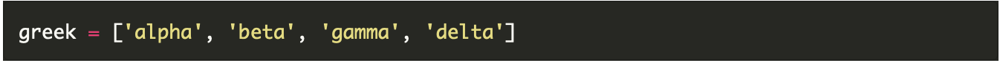
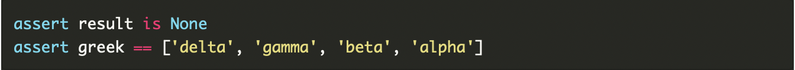
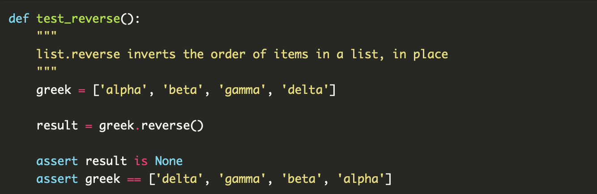

- AAA

It stands for arrange, act, assert. AAA is a way to structure your unit tests so they're easier to read, maintain, and enhance.
It stands for arrange, act, assert. AAA is a way to structure your unit tests so they're easier to read, maintain, and enhance.
The Arrange-Act-Assert(also AAA and 3A) pattern of testing was observed and named by Bill Wake in 2001. I first came across it in Kent Becks book Test Driven Development By Example and I spoke about it at PyConUK 2016. The pattern focuses each test on a single action. The advantage of this focus is that it clearly separates the arrangement of the System Under Test (SUT) and the assertions that are made on it after the action. On multiple projects I ve worked on I’ve experienced organised and clean code in the main codebase but disorganisation and inconsistency in the test suite. However when AAA is applied, I’ve found it helps by unifying and clarifying the structure of tests which helps make the test suite much more understandable and manageable.
The block of code that sets up the conditions for the test action.
There not much work to do in this example to build a list, so the arrangement block is just one line. 
Use a single block of code with no empty lines. Do not use assert in the Arrange block. If you need to make an assertion about your arrangement, then this is a smell that your arrangement is too complicated and should be extracted to a fixture or setup function and tested in its own right. Only prepare non-deterministic results not available after action. The arrange section should not require comments. If you have a large arrangement in your tests which is complex enough to require detailed comments then consider: Extracting the comments into a multi-line docstring. Extracting the arrangement code into a fixture and testing that the fixture is establishing the expected conditions as previously mentioned.
The line of code where the Action is taken on the SUT.
Start every Action line with result =. This makes it easier to distinguish test actions and means you can avoid the hardest job in programming: naming. When every result is called result, then you do not need to waste brain power wondering if it should be item = or response = etc. An added benefit is that you can find test actions easily with a tool like grep. Even when there is no result from the action, capture it with result = and then assert result is None. In this way, the SUTs behaviour is pinned. If you struggle to write a single line action, then consider extracting some of that code into your arrangement. The action can be wrapped in with ... raises for expected exceptions. In this case your action will be two lines surrounded by empty lines.
The block of code that performs the assertions on the state of the SUT after the action.

Use a single block of code with no empty lines. First test result, then side effects. Limit the actions that you make in this block. Ideally, no actions should happen, but that is not always possible. Use simple blocks of assertions. If you find that you are repeatedly writing the same code to extract information from the SUT and perform assertions on it, then consider extracting an assertion helper.
